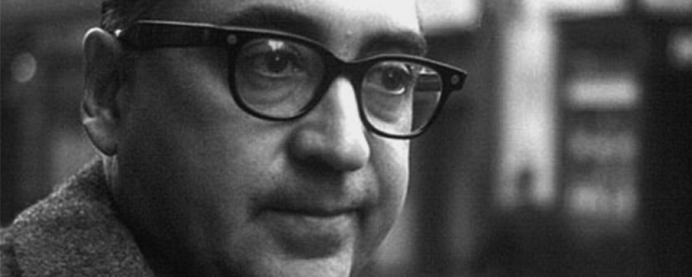
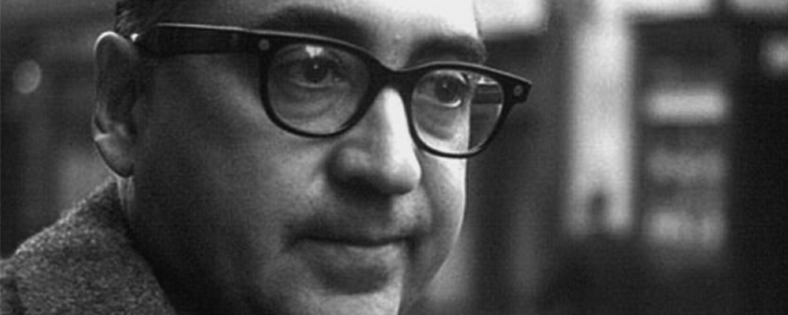

Saul Bass – Graphic Design
1920 – 1996
 

Timeline 1920 – 1996
- 1920Saul Bass is born in the Bronx district of New York
- 1936Wins a scholarship to study at the Art Students' League in Manhattan
- 1938Employed as an assistant in the art department of the New York office of Warner Bros
- 1944Joins the Blaine Thompson Company, an advertising agency, and enrolls at Brooklyn College, where he is taught by the émigré Hungarian designer and design theorist Gyorgy Kepes
- 1946Moves to Los Angeles to work as an art director at the advertising agency, Buchanan and Company
- 1952Opens his own studio, named Saul Bass & Associates in 1955
- 1954Designs his first title sequence for Otto Preminger’s Carmen Jones
- 1955Creates titles for Robert Aldrich’s The Big Knife and Billy Wilder’s The Seven Year Itch. The animated sequence he devises for Preminger’s The Man with a Golden Arm causes a sensation
- 1956Elaine Makatura joins the studio as an assistant
- 1957Devises titles for Michael Anderson’s Around The World in 80 Days and Preminger’s Bonjour Tristesse
- 1958Forges a new collaboration with Alfred Hitchcock by designing the titles for Vertigo. Works with the architects Buff, Straub & Hensman on the design of his home, Case Study House #20 in Altadena
- 1959Creates the title sequences for Hitchcock’s North by Northwest and Preminger’s Anatomy of a Murder
- 1960First title commission for Stanley Kubrick, Spartacus, and the last for Hitchcock, Psycho
- 1962Devises titles for Edward Dmytryk’s Walk on the Wild Side and directs his first short film, Apples and Oranges. Marries Elaine Makatura
- 1963Stanley Kramer commissions Bass to create titles for It’s A Mad, Mad, Mad, Mad World
- 1966Directs the racing sequences and devises the titles for John Frankenheimer’s Grand Prix
- 1968Wins an Oscar for the short film Why Man Creates and develops a corporate identity programme for the Bell System telephone company. Creates an installation for the Milan Triennale, which is cancelled after a student occupation
- 1973Designs the corporate identity of United Airlines
- 1974Directs his first feature film Phase IV
- 1980Designs the poster for Stanley Kubrick’s The Shining and devises the corporate identity of the Minolta camera company
- 1984Creates a poster for the Los Angeles Olympic Games
- 1987James L. Brooks persuades Bass to return to title design by creating the opening sequence of Broadcast News
- 1990Begins a long collaboration with Martin Scorsese by creating the titles for GoodFellas
- 1991Devises the titles for Scorsese’s Cape Fear and a poster for the 63rd Academy Awards. Bass designs the Academy Awards poster for the next five years.
- 1993Creates the title sequence for Scorsese’s The Age of Innocence and a poster for Steven Spielberg’s Schindler’s List
- 1995Designs titles for Scorsese’s Casino
-
1996Saul Bass dies in Los Angeles of non-Hodgkins lymphoma